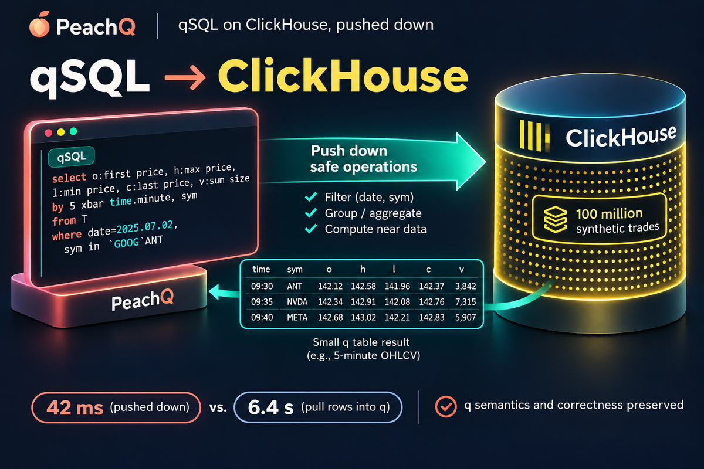

qSQL on ClickHouse, pushed down¶
If your firm runs ClickHouse next to kdb+, moving more history into it is a natural question. The awkward part is the q code: years of selects, analytics and the people who wrote them. We built a prototype to test whether that code can stay. A q developer writes ordinary qSQL against a ClickHouse table, PeachQ turns it into ClickHouse SQL, ClickHouse does the work, and the answer comes back as a q table. We then check it against the table q computes itself.

On 100 million trades, five-minute OHLCV bars for three symbols took 42 ms pushed into ClickHouse, against 6.4 seconds pulling the day's rows into q. The answers were equal.
The recording runs live on a shared development machine, so its timings differ from the measured table below. With pushdown switched off, PeachQ reads the columns for all five days before q filters them, which makes the gap wider than in the table.
What this means for a kdb+ team¶
- The q stays. Selects,
byclauses,xbar,wavg,firstandlastare written as they are today. Nobody rewrites them as SQL. - The work runs where the data is. ClickHouse filters, groups and aggregates; only the answer travels back to q.
- The answer is q's. Nulls, ordering and empty groups follow q's rules, not SQL's. Where ClickHouse cannot give q's answer, the query stays in q instead of returning something different.
Point q at it¶
The test data is five days of synthetic trades, 20 million a day over 626
symbols, in a ClickHouse MergeTree sorted by (sym, time, seq) and
partitioned by date:
CREATE TABLE taq.trade (date Date, time DateTime64(9), sym LowCardinality(String), ex LowCardinality(String),
cond LowCardinality(String), price Float64, size UInt32, seq Int64, tradeId Int64, corr Int32)
ENGINE = MergeTree PARTITION BY date ORDER BY (sym, time, seq)
Open the database and name the table:
q)h:hopen (`:pq:clickhouse:taq; `url`database!("http://127.0.0.1:18123"; `taq))
q)T:`:pq:clickhouse:taq:trade/
q)meta T
| c | t | f | a |
| symbol | char | symbol | symbol |
|=========|------|--------|--------|
| date | d | | |
| time | p | | |
| sym | s | | |
| ex | s | | |
| cond | s | | |
| price | f | | |
| size | j | | |
| seq | j | | |
| tradeId | j | | |
| corr | i | | |
Our server listens on port 18123; ClickHouse's default HTTP port is 8123. Each ClickHouse type reads as one q type:
| ClickHouse | q |
|---|---|
LowCardinality(String) |
symbol |
String |
string |
DateTime64(9) |
timestamp (UTC) |
Date |
date |
Float64 |
float |
Int64 |
long |
Int32 |
int |
UInt32 |
long |
Nullable versions map the same way, and NULL becomes the q null. The
prototype hides columns of other types rather than failing on them.
OHLCV bars¶
q)select o:first price, h:max price, l:min price, c:last price, v:sum size by 5 xbar time.minute, sym from T where date=2025.07.02, sym in `BAA`BAB`BAC
| minute | sym | o | h | l | c | v |
| minute | symbol | float | float | float | float | long |
|========|========|--------|--------|--------|--------|------|
| 04:00 | BAA | 142.62 | 142.77 | 142.59 | 142.59 | 5542 |
| 04:00 | BAB | 141.76 | 141.96 | 141.76 | 141.87 | 4916 |
| 04:00 | BAC | 60.13 | 60.32 | 60.13 | 60.25 | 5163 |
..
All of it runs in ClickHouse. .clickhouse.lastsql holds the statement
PeachQ sent. Here it is with the column definitions trimmed:
WITH _q_src AS (…)
SELECT CAST(_q_min_time - (_q_min_time % 5 + 5) % 5 AS BIGINT) AS minute, sym,
if(isNaN(argMin(_q_raw_price, _q_i1)), NULL, argMin(_q_raw_price, _q_i1)) AS o,
coalesce(max(price), -inf) AS h, coalesce(min(price), inf) AS l,
if(isNaN(argMax(_q_raw_price, _q_i1)), NULL, argMax(_q_raw_price, _q_i1)) AS c,
CAST(coalesce(sum(size), 0) AS BIGINT) AS v
FROM _q_src WHERE _q_raw_date = toDate32('2025-07-02') AND _q_raw_sym IN ('BAA', 'BAB', 'BAC')
GROUP BY … ORDER BY …
Most of that SQL is there so the answer matches q's:
firstandlastfollow the table's order. In q,first priceis the first row in table order. A ClickHouse table's order is its sorting key, so within one symbol's group the first row is the smallest(time, seq), found withargMin.- Empty groups give q's identities.
maxof no prices is-0win q, hencecoalesce(…, -inf). - The filter is on the stored columns. That lets ClickHouse prune by its primary key: this query reads 9 of the table's 12,210 granules.
- The bucket is q's.
5 xbar time.minutecomes back as q minutes, not as ClickHouseDateTimevalues.
.clickhouse.sql[h; query] returns the SQL for a select without running it,
so a developer can check what a query will send before it runs.
Nulls follow q¶
… WHERE _q_raw_date = toDate32('2025-07-02') AND _q_raw_sym = 'BAA'
AND (_q_raw_price < 142.6 OR (_q_raw_price IS NULL OR isNaN(_q_raw_price))) ORDER BY i
In q a null is below every number, so price<142.6 keeps a null price.
SQL's < drops NULL, so the extra arm puts those rows back.
VWAP and the last ten trades¶
SELECT sym, if(isNaN(sum(size * price) / sum(size * CAST(price IS NOT NULL AS INTEGER))), NULL,
sum(size * price) / sum(size * CAST(price IS NOT NULL AS INTEGER))) AS vwap,
CAST(coalesce(sum(size), 0) AS BIGINT) AS v
FROM _q_src WHERE _q_raw_date = toDate32('2025-07-02') GROUP BY sym ORDER BY sym
wavg is sum(size * price) over the sum of the weights, but only the
weights of non-null prices count, as in q.
SELECT time, price FROM (SELECT time, price, i FROM _q_src
WHERE _q_raw_date = toDate32('2025-07-02') AND _q_raw_sym = 'BAA' ORDER BY i DESC LIMIT 10) ORDER BY i
select[-10] means the last ten rows in table order. i is the sorting key
(sym, time, seq): the inner query takes ten rows from the end and the
outer one puts them back in ascending order, as q returns them.
When a query stays in q¶
Here is a table with no sorting key:
CREATE TABLE taq.tape (sym LowCardinality(String), price Float64) ENGINE = MergeTree ORDER BY tuple()
q's first needs a table order, and this table does not have one that
ClickHouse will guarantee. Rather than guess which row is first, PeachQ pulls
the two columns and q answers from the rows it reads.
How fast¶
We ran each query three ways on the same machine:
- Pull then q: fetch the day's rows for the columns the query reads, then run the select in q.
- Pushed: the qSQL on the ClickHouse table.
- Hand-written SQL: the same question written directly in ClickHouse SQL, read back the same way.
Milliseconds, median of seven warm runs, on a shared 10-core machine with ClickHouse 25.8 in Docker and its data in memory:
| query | pull then q | pushed | hand-written SQL |
|---|---|---|---|
| 5-minute OHLCV bars, 3 symbols, one day | 6,358 | 42 | 27 |
| 5-minute OHLCV bars, all 626 symbols, one day | 10,467 | 785 | 731 |
| VWAP by symbol, all symbols, one day | 3,210 | 104 | 78 |
| count and high, one symbol, one day | 2,404 | 16 | 8 |
| last 10 trades of one symbol | 5,124 | 18 | 6 |
Every pushed answer equals the pull-then-q answer.
Pushing is 13 to 285 times faster than pulling into q. On the two large queries it is within 1.07 and 1.34 times of hand-written SQL. On the small ones the difference is a fixed cost of about 9 ms per select, for a schema lookup and the translation, which schema caching would largely remove.
A look at aj¶
Today an aj works on ClickHouse data in two steps. The select on the trade
table is pushed, so ClickHouse returns only one day of three symbols, and
aj runs in q on those rows:
q)P:([] sym:`BAA`BAB`BAC; time:3#2025.07.02D10:00)
q)aj[`sym`time; P; select sym, time, price, size from T where date=2025.07.02, sym in `BAA`BAB`BAC]
| sym | time | price | size |
| symbol | timestamp | float | long |
|--------|-------------------------------|--------|------|
| BAA | 2025.07.02D10:00:00.000000000 | 142.6 | 49 |
| BAB | 2025.07.02D10:00:00.000000000 | 141.84 | 461 |
| BAC | 2025.07.02D10:00:00.000000000 | 60.24 | 59 |
The next step is pushing aj itself, which maps naturally onto ClickHouse's
ASOF LEFT JOIN. In a separate test of 30 probe times against three symbols,
a hand-written ASOF LEFT JOIN returned the same rows as PeachQ's aj on the
pulled trades, in 17 ms against 65 ms. That translation is not built yet.
PeachQ's own aj has not been checked against kdb+, and ties at equal times
and unmatched rows need care.
What this is¶
This is a prototype on a development branch. It is not in a PeachQ release. It is read-only, covers the column types above, and was tested on the queries in this post and its own test suite. Every pushed shape is tested against the same select run in q on pulled rows.
Turning it into something you would run against production tables needs:
- a reader for ClickHouse's Native format that streams results straight into q vectors (results currently travel as Parquet);
- the remaining ClickHouse types, such as
Decimal,Array,MapandEnum; - split filters, so a
whereterm ClickHouse cannot answer exactly no longer forces a whole query back into q; - joins beyond the
ajpreview, and schema caching for small queries; - testing against your queries, on your tables.
If you run kdb+ next to ClickHouse and want this built out, contact us. Send the queries that matter to you, and we will tell you which of them push today and what the rest would take.